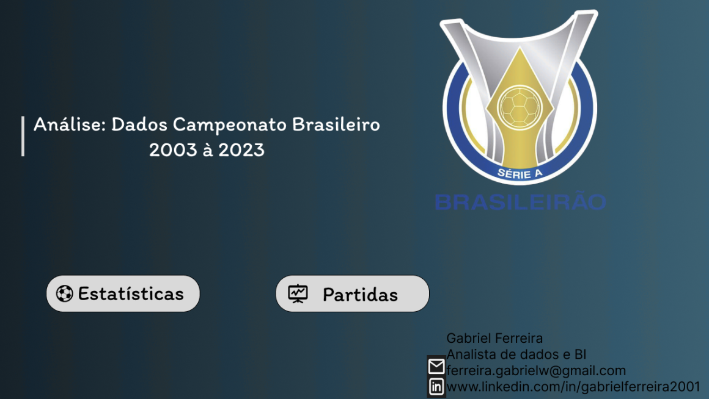
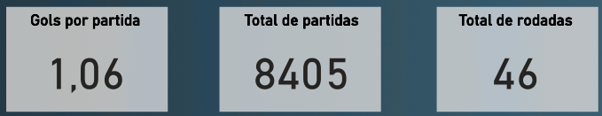
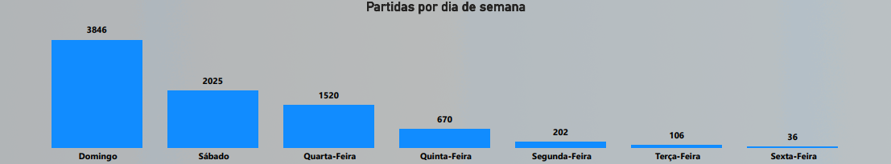
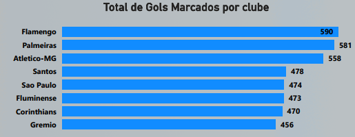
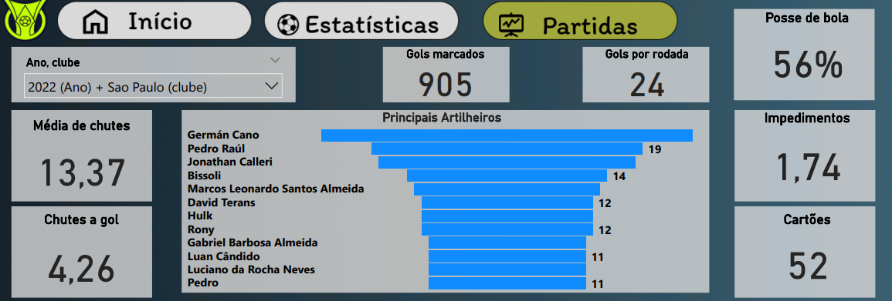
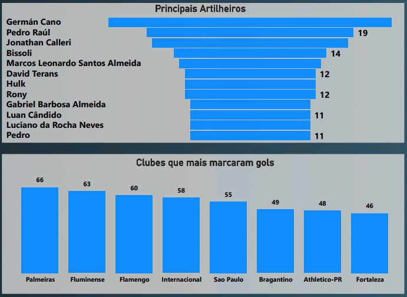

Project: Brazilian Championship Dashboard - Football Statistics Analysis
Introduction
This project presents an analytical Dashboard focused on Brazilian Football Championship statistics. The main objective is to provide a comprehensive and detailed view of team and player performance, match dynamics, and trends over seasons. The dashboard aims to enable analysts and football enthusiasts to explore key metrics such as goals scored, match participation, top scorers, game statistics (ball possession, shots, fouls), and team behavior, allowing for an in-depth understanding of the championship.
Project Structure
The dashboard is organized to offer different perspectives on the Brazilian Championship data:
- Championship Overview: Aggregated indicators such as goals per match, total matches, and total rounds.
- Match Dynamics: Analysis of match distribution by day of the week and the total number of goals scored by major clubs over several seasons.
- Performance by Season/Club (Example: 2022 - São Paulo): Detailed advanced statistics such as ball possession, average shots, shots on target, passes, offsides, fouls, corners, pass accuracy, and cards for a specific club in a season.
- Top Scorers and Highlight Clubs in the Season: Ranking of top scorers and the performance of clubs that scored the most goals in a specific season.
- Geographic Distribution of Results: A map to visualize the participation of states.
Technologies Used
For the construction of this analytical dashboard, the tools employed were:
- Power BI Desktop: To connect data sources, perform the necessary modeling and transformation, develop DAX measures for complex calculations, and build the interactive visuals that compose the dashboard.
- Figma: The prototyping and design of the dashboard were done with Figma, ensuring an intuitive and visually appealing user experience.
ETL Process (Extraction, Transformation, and Loading)
The ETL process for the Brazilian Championship Dashboard was structured to integrate multiple data sources, ensuring a complete analysis:
- Extraction: Raw data was extracted from four distinct CSV files:
cartoes.csv: Contains information about yellow and red cards.estatisticas.csv: Includes detailed match statistics, such as ball possession, shots, fouls, and corners.full.csv: Possibly the main table with details about each match, involved teams, and results.gols.csv: Specific data about goals scored, including top scorers. These files were imported into the Power BI environment.
- Transformation: In Power Query, an integral part of Power BI, various cleaning and enrichment operations were performed. This included:
- Data treatment, such as standardizing club and player names, and correcting values.
- Creation of new columns and calculated metrics essential for the analyses, such as goals per match, using the M language.
- Data modeling was crucial. Relationships were established between the four tables (
cartoes,estatisticas,full,gols), ensuring that all information could be correctly aggregated and filtered for multidimensional and contextual analyses.
- Loading: After the extraction and transformation steps, the data was loaded into the Power BI data model, ready to feed all the charts and tables of the dashboard, allowing for interactive exploration of the Brazilian Championship statistics.
Dashboard
The dashboard features a dynamic layout, divided into two main pages that allow exploration of general and specific data by season and club. The interface combines prominent KPIs for a quick overview, bar charts for comparisons (goals by club, matches by day of the week), a bar chart for top scorers, and a map for geographical visualization. Interactivity is a central feature, allowing filtering by year, club, and other dimensions, which facilitates detailed investigation of any aspect of the championship.

Insights
The analysis of the data presented in the dashboard revealed valuable insights into the Brazilian Championship:
- General Championship Indicators:
- The championship records an average of 1.06 Goals per Match.
- A total of 8,405 Matches and 46 Rounds were counted, demonstrating the vast amount of data processed.

- Match Patterns by Day of the Week:
- The vast majority of matches occur on Sundays (3,846) and Saturdays (2,025), followed by Wednesdays (1,520).
- Friday records a very low or zero number of games (36), indicating a clear preference for weekend and midweek games.

- Historical Goal Ranking by Club:
- Flamengo leads the goal-scoring ranking with 590 goals, followed by Palmeiras (581) and Atlético-MG (558).
- Other prominent clubs include Santos (478), São Paulo (474), Fluminense (473), Corinthians (470), and Grêmio (456).

- Detailed Game Statistics (Example: São Paulo in 2022):
- By filtering for “2022 (Year) + São Paulo (club)”, the dashboard shows specific statistics for this context.
- São Paulo had a Ball Possession of 56%, an Average of 13.37 Shots, and 4.26 Shots on Target.
- The matches registered 905 Goals Scored (in the overall 2022 filter), an Average of 24 Goals per Round, an Average of 1.74 Offsides, 52 cards, 60 Corners, and a Pass Accuracy of 82%.

- Top Scorers and Club Performance in the Season (2022):
- Among the Top Scorers, Germán Cano stands out with 26 goals, followed by Pedro Raúl (19) and Jonathan Calleri (14).
- In the ranking of Clubs that scored the most goals (in the 2022 season), Palmeiras leads with 66 goals, followed by Fluminense (63) and Flamengo (60). São Paulo, in the filtered context, appears with 55 goals. This view shows the offensive performance of clubs in a specific season.

Considerations
The Brazilian Championship statistics dashboard offers a robust tool for in-depth analysis. Based on the insights obtained, some important considerations arise:
- Performance Analysis by Season and Club: The ability to filter by year and club allows for a granular analysis of each team’s tactical and statistical performance across different seasons, aiding in evaluating evolution and identifying strengths and weaknesses.
- Game Trends: The prevalence of games on Sundays/Saturdays and Wednesdays reinforces the agenda patterns of Brazilian football, while the absence of games on Fridays can be explored for other events or strategies.
- Offensive Productivity: The comparison between historical goal ranking and seasonal goal performance offers a perspective on the offensive consistency of clubs over time. Analyzing top scorers and their respective clubs is fundamental to understanding the dependence of certain teams on their main goal scorers.
- Football Geography: The map of “States with most wins” (or representative clubs) can be used to understand the geographical distribution of success in Brazilian football, aiding in scouting strategies or regional development.
Conclusion
The Brazilian Championship Dashboard proved to be a powerful analytical tool that transforms complex football data into actionable sports intelligence. Its main contribution lies in its ability to:
- Provide a macro and micro view of championship performance, both at a general level and by season and club.
- Identify game trends, tactical efficiency, and individual performance of players and teams.
- Allow for comparative and temporal analysis that enriches the understanding of competitiveness and the evolution of Brazilian football.